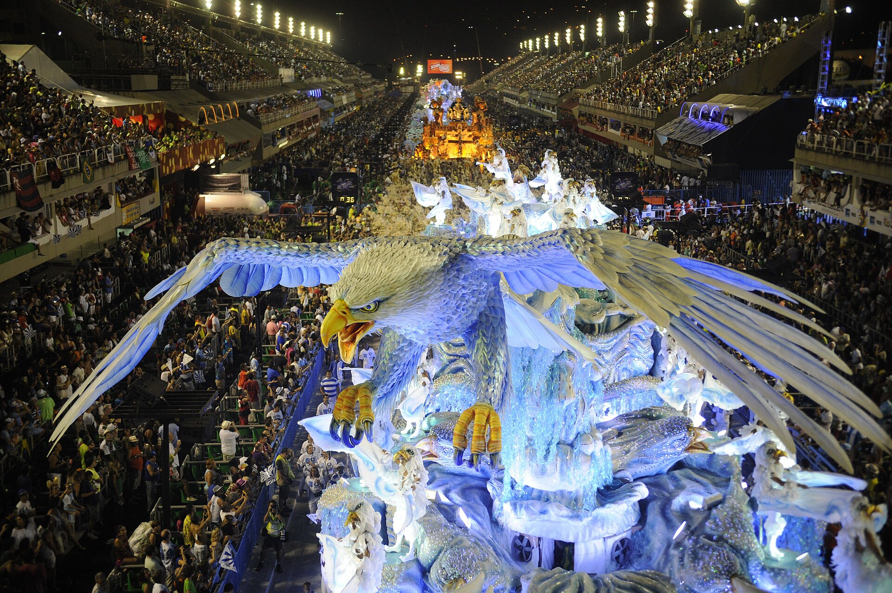

Le carnaval de Rio
Le Carnaval de Rio est l'événement touristique le plus important de la municipalité de Rio et la fête nationale la plus populaire au Brésil, en particulier à Rio de Janeiro. Il est devenu un vrai synonyme de la célébration du carnaval dans le pays et même au monde. Il a lieu tous les ans durant les 2 semaines qui précèdent le mercredi des Cendres, qui est le jour qui marque le début du carême. En 2018, le carnaval de Rio s'est tenu du 9 au 14 février, en 2019 du 2 au 9 mars, en 2020 du 21 au 26 février. Les réjouissances commencent après le signal du Rei Momo. À l'occasion du Carnaval, le maire lui transmet les clefs de la ville, l'aidant à trouver sa reine, une jeune fille choisie pour sa beauté et son expérience de la samba. Celle-ci gouvernera la ville durant les trois jours du carnaval
